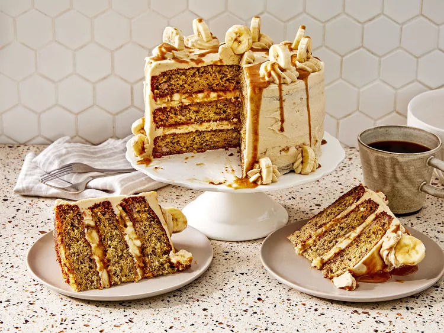

Banana Cake

Banana Caramel Delight: A Luscious Fusion of Sweetness!
Indulge in the ultimate tropical delight with our Banana Rum Caramel Cake. Moist layers of banana-infused cake are generously draped in luscious caramel cream frosting, infused with a touch of rum. With each bite, experience the perfect harmony of sweet bananas, rich caramel, and a hint of rum. Elevate your taste buds with this decadent masterpiece, perfect for any occasion.
- Prep Time: 30 mins
- Bake Time: 25 mins
- Cool Time: 1 hr 10 mins
- Total Time: 2 hr 20 mins
Ingredients
Banana Cake
- cooking spray
- 2 ½ cups all-purpose flour
- 2 teaspoons baking soda
- 1 teaspoon table salt
- 2 cups granulated sugar
- 2 cups mashed banana (from 5 (6 oz.) bananas)
- 1 cup canola oil
- ¾ cup plain whole Greek yogurt
- ¼ cup whole buttermilk
- 2 teaspoons vanilla extract
- 2 large eggs
Salted Banana Caramel Sauce
- 1 cup dark brown sugar
- ½ cup heavy cream
- ⅓ cup unsalted butter
- ¾ teaspoon ground cinnamon
- ¼ teaspoon sea salt
- 1 ½ very ripe bananas, mashed
- ¾ teaspoon vanilla bean paste or 1 1/2 vanilla beans
- ½4 tablespoons dark rum (such as Meyer's dark rum), divided
- 3 ripe bananas, sliced
Caramel Frosting
- 2 cups unsalted butter, softened
- 4 cups powdered sugar
- 1 cup salted banana caramel sauce
Directions
- Preheat oven to 350 degrees F (175 degrees C). Spray 3 (8-inch) round cake pans with cooking spray, and line bottoms with parchment.
- Whisk together flour, baking soda, and salt in a large bowl. Whisk together sugar, 2 cups mashed banana, oil, yogurt, buttermilk, vanilla, and eggs in a second bowl until well blended; add to flour mixture and stir just until combined. Divide batter evenly between prepared pans.
- Bake in the preheated oven until a toothpick is inserted and comes out clean, 25 to 30 minutes. Cool in pans on a wire rack for 10 minutes. Remove cakes from pans to a wire rack cool completely, about 1 to1 1/2 hours.
- Meanwhile for the caramel sauce, combine sugar, cream, butter, cinnamon and salt in a small saucepan. Cook over medium heat, whisking constantly, until butter is melted and sugar is dissolved, about 2 minutes. Whisk in 1 1/2 mashed banana, vanilla bean paste, and 3 tablespoons of the rum and remove from heat.
- Place sliced bananas in a small bowl and drizzle with 4 tablespoons of the caramel sauce and remaining 1 tablespoon rum; toss gently to coat. Cool remaining caramel sauce to room temperature, about 20 minutes.
- For the caramel frosting, beat butter in the bowl of a stand mixer fitted with the paddle attachment on medium speed until light in color, about 3 minutes. Gradually add powdered sugar, and beat on medium speed for about 3 minutes until light and fluffy. Add 1 cup of the salted banana caramel sauce, and beat on low speed until combined, about 1 minute. Transfer 1 cup frosting to a piping bag fitted with a #12 tip.
- To assemble the cake, place 1 cake layer on a serving plate; spread with 2/3 cup Caramel Frosting. Using the piping bag to pipe a ring of Caramel Frosting around outer edge of cake layer on top of frosting.
- Spoon half of sliced banana mixture inside frosting ring and spread evenly. Top with second cake layer.
- Spread another 2/3 cup caramel frosting over second layer. Repeat with piping bag to pipe a ring of caramel frosting around outer edge of cake layer on top of frosting.
- Spoon remaining sliced banana mixture inside frosting ring and spread evenly. Top with remaining cake layer.
- Spread remaining frosting on top and sides of cake and smooth.
- Use piping bag to decorate as desired.
- Slice and serve with remaining 3/4 cup caramel sauce.
Return to top
Return to main page